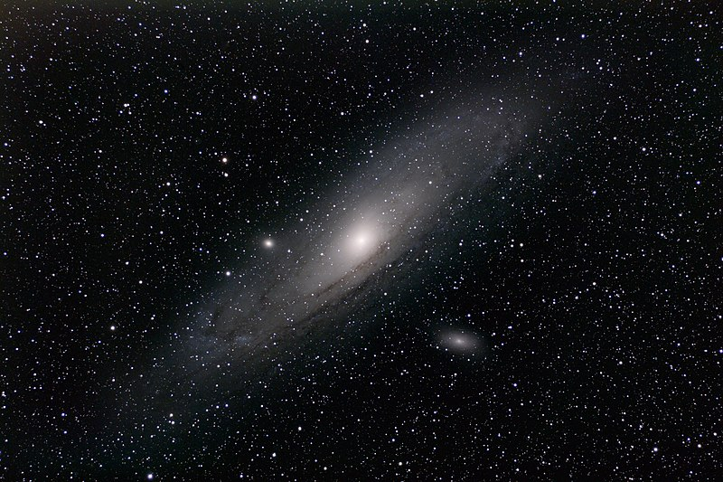

Andromeda
Dilansir dari Wikipedia, Galaksi Andromeda (nama lain, Messier 31 dan NGC 224) adalah sebuah galaksi spiral yang berjarak kira-kira 2,5 juta tahun cahaya dari bumi. Galaksi ini merupakan salah satu galaksi di luar galaksi Bima Sakti yang dapat dilihat dengan mata telanjang pada malam yang cerah, tanpa bulan, dan tanpa polusi cahaya.
Strukturnya mirip dengan galaksi Bima Sakti yaitu berbentuk spiral. Jaraknya sekitar 2,5 juta tahun cahaya. Letaknya di langit adalah di belahan langit utara, sekitar 41 derajat di sebelah utara khatulistiwa langit. Galaksi ini dapat diamati di bulan September, Oktober, dan November.
Dengan mata telanjang, galaksi ini tampak seperti kabut tipis kecil di langit utara. Namun, jika diamati dengan teropong yang dapat menampakkan bintang-bintang redup di tepian galaksi Andromeda, ukurannya bisa lebih dari 7 kali diameter sudut bulan. Galaksi ini berisi sekitar 1 triliun bintang dan bergerak mendekati Bima Sakti dengan kecepatan sekitar 300 km/detik.
Struktur
Morfologi galaksi Andromeda diklasifikasikan sebagai SA(s)b dalam Klasifikasi De Vaucouleurs. Namun, pada tahun 2007, data terbaru dari 2MASS menunjukkan bahwa morfologi galaksi Andromeda sebenarnya adalah galaksi spiral berbatang.
Tahun 1998, Badan Luar Angkasa Eropa mengumumkan bahwa Andromeda memiliki struktur cincin bersamaan dengan struktur spiralnya. Struktur ini tidak bisa terlihat dengan mudah karena terdiri dari debu yang dingin sehingga dibutuhkan teleskop Inframerah untuk melihatnya.
Selanjutnya, sebuah studi lain memperlihatkan bagaimana struktur spiralnya memanjang dari inti galaksi melampaui cincin-cincin tadi, namun strukturnya tidak berkelanjutan dan tersegmentasi.
Kebanyakan para astronom berpikir kalau galaksi Andromeda dengan Galaksi Bimasakti agak berbeda selama beberapa dekade terakhir. Hingga pada tahun 2005, sekelompok astronom menggunakan Observatorium Keck untuk meneliti halo bintangnya. Hasilnya menunjukkan bahwa metalisitas halo bintang Andromeda sangatlah miskin.
Hal ini cukup mengejutkan, karena selama ini perbedaan antara mereka dianggap terletak di metalisitas halo bintangnya. Ini artinya jika mereka sama-sama miskin metalisitas, maka setidaknya mereka pernah berevolusi sama-sama.
Inti

Andromeda memiliki inti yang sangat kompak dan padat sehingga sulit untuk diketahui strukturnya dari bumi. Pada bulan Juni 1991, Teleskop Hubble diarahkan untuk meneliti inti Andromeda. Hasil observasi tersebut menunjukkan terdapat dua konsentrasi pada intinya yang terpisah sejauh 0.49" (4.9 tahun cahaya).
Konsentrasi yang terang dinamai P1, sementara konsentrasi yang redup dinamai P2. Konsentrasi P2 jatuh di pusat sebenarnya galaksi ini, dan memiliki lubang hitam yang memiliki massa kurang lebih 1–5 × 107 M☉
Awal penjelasan penyebab P1 lebih terang adalah sisa-sisa dari galaksi kecil yang 'dimakan' oleh galaksi Andromeda (kemudian muncul penjelasan inti yang sebenarnya satu yang tertutupi debu). Tapi penjelasan ini tidak lagi kuat karena konsentrasi ini akan memiliki paruh hidup yang pendek sebagai akibat dari gangguan pasang surut lubang hitam.
Meskipun masalah ini terselesaikan separuhnya bila P1 ini memiliki lubang hitam sendiri yang menstabilkan dirinya, tetapi distribusi pergerakan bintangnya menunjukkan tidak ada indikasi lubang hitam di P1.
Dugaan Eksoplanet
PA-99-N2 adalah sebuah peristiwa mikrolensa gravitasi yang terjadi di galaksi Andromeda pada tahun 1999. Salah satu penjelasannya adalah sebuah bintang (yang memiliki massa setengah dari matahari) melensakan sebuah raksasa merah.
Peristiwa ini mengungkapkan adanya sebuah planet mirip Jupiter pada raksasa merah tersebut. Jika ini terkonfirmasi, maka planetnya akan menjadi planet pertama yang ditemukan di luar Galaksi Bimasakti. Namun, studi selanjutnya menunjukkan terdapat anomali pada peristiwa ini.